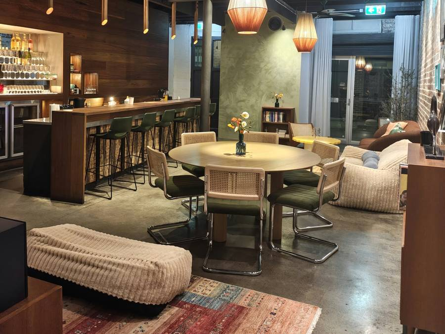
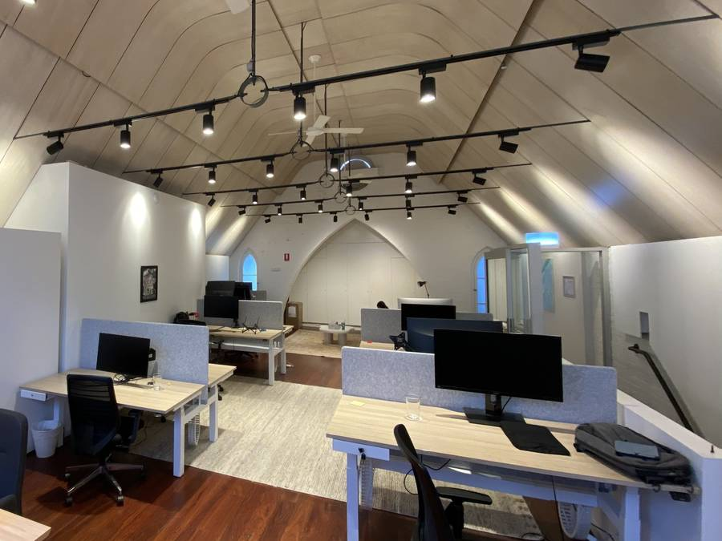

Monday Meals
The Schelling point weekly meetup! Bring your own food for a group lunch at Broad Church every Monday at 12:30pm - great chance to meet everyone! Microwaves, utensils, and hot water available.
The Schelling point weekly meetup! Bring your own food for a group lunch at Broad Church every Monday at 12:30pm - great chance to meet everyone! Microwaves, utensils, and hot water available.
We have discussions on Fridays over lunch, discussing recent writing and events on AI safety.
Nothing scheduled right now. Check back soon, or join us for Monday Meals.
28th Aug 2026
with Fernando Borretti
Fernando's article recently received attention on Twitter, so we organised a discussion with him.
21st Aug 2026
Richard Ngo, a well-known AI alignment researcher, wrote about mistakes he believes that the AI safety community has made in the past. The discussion inspired a post by one of our members: Safety's Second Way.

